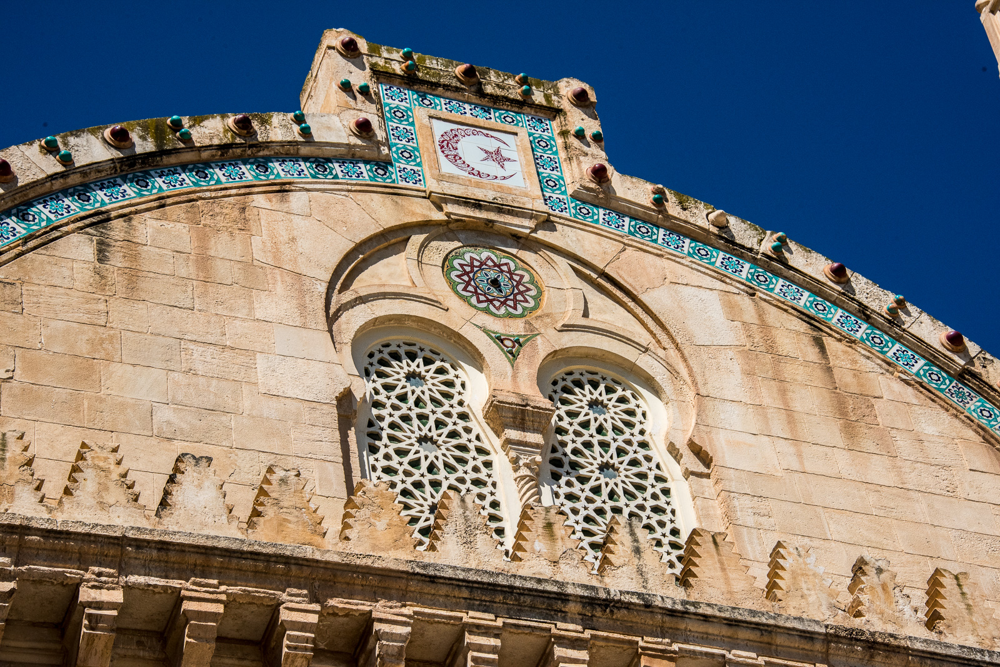
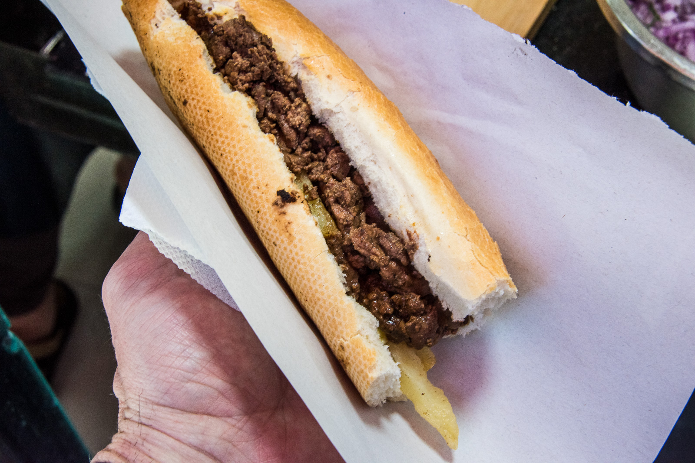
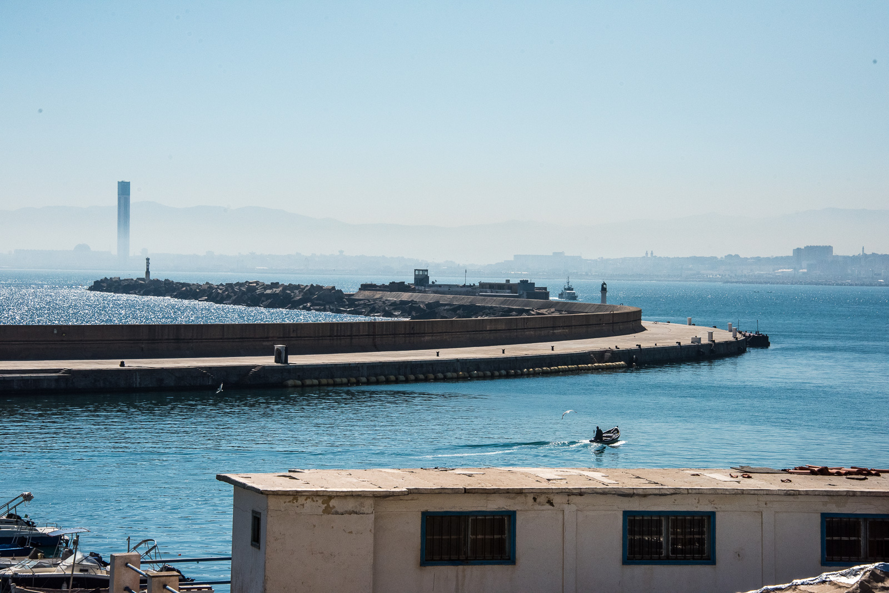

The White City
That Faces the Sea
Algiers arrives as a shock of white. Built on steep hills above a great natural bay, the city cascades down to the Mediterranean in tiers — Ottoman palaces and French boulevards and concrete housing blocks all piled on top of each other in a density that only makes sense once you are inside it, walking the streets with someone who grew up here.
Yusra is that person. She has been guiding in Algiers since 2025 on GuruWalk — a free tour platform where payment is left to the visitor's discretion at the end. Her pitch is not the Wikipedia version of the city. She grew up here. She knows which corner has the best liver sandwiches, which walls are Ottoman and which are French, and where to stand to see the gas pipeline that runs under the Mediterranean to Spain.
The tour covers twelve stops over four hours and twelve kilometres, beginning at the great square in the lower city and climbing up through the Casbah — a UNESCO World Heritage site, a living neighbourhood, and one of the most architecturally significant urban ensembles in North Africa — before dropping back down to the seafront at Bab El Oued.
Place des Martyrs &
Djemaa el-Djedid
The tour begins at Place des Martyrs — Martyrs' Square — the great open space at the foot of the Casbah where the old city meets the French colonial city. The name dates from independence: this is where the memory of those who died in the 1954–62 war of liberation is publicly held.
The meeting point is beside the minaret of Djemaa el-Djedid — the New Mosque, which has a clock on its minaret and is conspicuous enough to find without difficulty. It was built by the Ottomans in the 17th century and sits directly on the edge of the square, its white dome and minaret visible from well down the boulevard.
Side by side near the square stand two mosques that together tell the compressed history of the city. Djemaa el-Djedid was built by the Ottomans when Algiers was one of the most powerful cities on the Mediterranean — a corsair capital that extracted tribute from European shipping and held European captives for ransom. At its peak, Algiers was richer and more feared than most European port cities.
Ketchawa Mosque, a short walk away, tells the next chapter. Built in the 16th century as an Ottoman mosque, it was converted to a cathedral by the French after their invasion of 1830 — its minaret demolished, its interior reconfigured for Christian worship. After independence in 1962, it was reconverted to a mosque. The building holds all three phases in its stones.
Layers of Conquest,
Held in a Single Building
France invaded Algeria in 1830, ostensibly over a diplomatic dispute involving a fly swat — an insult to the French consul, allegedly struck by the Dey of Algiers with a fan during a heated exchange about debt. The real reasons were geopolitical: a weakening Ottoman presence, French domestic politics, and the enormous wealth of North Africa.
The occupation that followed lasted 132 years. Its physical traces are everywhere in Algiers — in the wide Haussmann-style boulevards cut through the old city, in the cathedral that was made of a mosque, in the administrative buildings along the seafront. The French did not simply colonise Algeria; they attempted to replace it. The Casbah above the square is what survived.
"The wall is the remaining collar from the Ottoman governor's citadel — the Itadelle, where the governor used to live. If you go to Istanbul, you'll see the same wall, literally. But when it comes to the residents inside, it's completely different."
— Yusra
The Living Casbah &
Buildings Nobody Can Fix
The Casbah is not a museum. It is a neighbourhood of roughly fifty thousand people, built on a hillside so steep that some of its lanes are effectively staircases. The houses are traditional courtyard structures — inward-facing, cool in summer, their decoration concentrated on the interior rather than the street facade. From outside, many look blank and deteriorating. From inside, some are extraordinary.
The Casbah has been a UNESCO World Heritage Site since 1992, but designation has not solved its fundamental structural problem. Almost all the buildings are privately owned. Many are at risk of collapse — some from age, some from earthquake damage, some from decades of deferred maintenance during and after the civil war of the 1990s.
The state cannot simply demolish and rebuild without the owners' consent. And the owners — even those living in buildings that are visibly failing — are often deeply resistant to any change. These are family homes, passed down through generations. The emotional attachment runs deeper than the structural risk. So the buildings stay, crumbling, loved, contested, and inhabited.
Street art has begun to appear in some of the Casbah's tighter lanes — not as gentrification, but as neighbourhood expression. In one corner, a family commissioned an elaborate calligraphic frame around their doorway. The door itself, Yusra points out, is the original — the calligraphy was added around it, not instead of it. The Casbah absorbs things this way.
The plainclothes security presence in the Casbah is noticeable once you know to look for it. Algeria does not use CCTV cameras in civilian areas the way European cities do. Instead, plain-clothes officers — civil police — monitor key positions: corners, entrances, busy junctions. Yusra is matter-of-fact about this. It is not, she says, a sign of danger. It is the formality of a state that prefers eyes to lenses.
Qasr El Ryas &
The Last Seafront Palace
At the base of the Casbah, where the old city meets the sea wall, stands what Yusra considers the Casbah's finest surviving interior: the Qasr El Ryas — the Palace of the Rais, or corsair admirals — housed within Bastion 23 of the old Ottoman sea defences.
This is the last remaining seafront palace of the Casbah. When the French invaded, they demolished most of the lower Casbah to build their new city. Bastion 23 survived, incorporated into the new urban fabric, its architecture half-buried and half-forgotten until restoration work revealed what was inside.
The Qasr El Ryas was the residence of the Rais — the admirals and corsair captains who commanded the Algerian fleet during the Ottoman period. Algiers at the height of its power in the 16th and 17th centuries controlled the central Mediterranean. Its corsairs raided as far as Iceland, taking captives for ransom or sale. The city's wealth was staggering.
The palace reflects that wealth. Its interior courtyards are decorated with zellige tilework, carved stucco, and painted ceilings in the Andalusian-Ottoman tradition — brought by craftsmen who had fled the Reconquista in Spain and settled in Algiers, bringing their skills with them. The entry fee is 200 Algerian dinars — approximately £1.20. Yusra considers it among the most undervisited significant interiors in the Mediterranean world.
The Liver Sandwich
& What Algerians Actually Eat
One of Yusra's firm intentions for the tour is that visitors eat something real. Not restaurant food adjusted for foreign palates, but the things that people in the Casbah and Bab El Oued eat on a normal Saturday — bought from a cart or a counter, wrapped in bread, eaten standing up.

The signature street food stop is the liver sandwich — kbda — grilled offal in a roll, a staple of Algerian street food that surprises visitors who associate liver with formal cooking. It is common across North Africa and unremarkable to anyone who grew up eating it. To the uninitiated, it is the test. Those who try it tend to come back for another.
Alongside the liver sandwich, the route passes vendors selling olive bread, sweets, and karantika — a chickpea flour dish baked in an open pan, somewhere between a thick pancake and a crustless quiche, eaten hot with cumin and harissa. Its texture is liquid enough to eat with a spoon, firm enough to hold in bread. It is Algiers' great unsung street food, unknown outside the country and fiercely debated within it — each neighbourhood convinced its version is correct.
The group's attempt to classify karantika within known culinary categories — pie, pancake, polenta, socca — produces extended and inconclusive discussion. Yusra enjoys this. The point, she suggests, is that it doesn't map onto anything else. It is simply what it is.
Haggling over prices is part of the transaction at street food stalls in a way that surprises visitors accustomed to fixed-price food. The negotiation is not adversarial; it is social. Knowing the rough going rate — and being visibly engaged rather than passive — is taken as a sign of respect.
Bab El Oued:
The Gate of the River
Bab El Oued — the Gate of the River — is one of the oldest and densest neighbourhoods in Algiers, spreading along the seafront north-west of the Casbah. It is not a tourist quarter. It is where people live: tightly packed apartment blocks, market streets, fishing families, the kind of everyday urban life that guidebooks tend to omit.
Yusra brings the group here on weekdays for the seafront, and on weekends for the neighbourhood streets — the two different faces of a place that most visitors to Algiers never see at all. The walk along the waterfront is long and breezy, with views across the bay to the lighthouse and, on clear days, a sense of the scale of the Mediterranean crossing that lies beyond.
The timing of the April visit coincided with the approach of Eid Al-Adha — the Festival of the Sacrifice, when families across the Muslim world purchase a ram to slaughter at home in commemoration of Ibrahim's willingness to sacrifice his son. In Algeria, as in much of North Africa, the rams are bought live, often days in advance, and kept at home or tied in the street until the day.
Walking through Bab El Oued in the days before Eid, the rams are everywhere — in doorways, on balconies, tied to lamp posts, watched over by children. It is one of the more vivid pieces of urban theatre that Algiers produces, and entirely invisible to anyone visiting in the wrong week. Yusra, characteristically, frames it as one of the things you can only see by being here at the right moment with the right guide.
The Harbour View &
the Pipeline to Spain
The tour ends at a viewpoint above the harbour, looking back across the bay and down to the lighthouse that marks the mouth of the port. From here the whole of Algiers is visible at once — the white tiers of the Casbah climbing the hill, the French colonial grid of the lower city, the container terminals and the ferry port, and beyond it all the Mediterranean, flat and enormous.

Yusra points south-west across the water. Somewhere beneath the surface, invisible but real, a gas pipeline runs from Algeria under the sea to Spain — one of the main arteries through which Algerian natural gas reaches Europe. A second pipeline runs through Tunisia. The view from the harbour gives no sign of either, but knowing they are there changes the way the sea looks: not just a crossing but an infrastructure, a dependency, a relationship between the African shore and the European one that predates the pipelines by millennia.
"We were writing about the traffic of the ships. There's a pipe that goes under the sea — gas pipes. There is one that goes through Tunisia. And another one to Spain."
— Yusra, at the harbour viewpoint
The rams in the streets. The calligraphy around the door. The eel in the museum pond. The liver sandwich eaten standing up in a lane in the Casbah. The best tours leave you with images rather than facts — things you saw that you couldn't have found on Wikipedia, with someone who grew up knowing where to look.